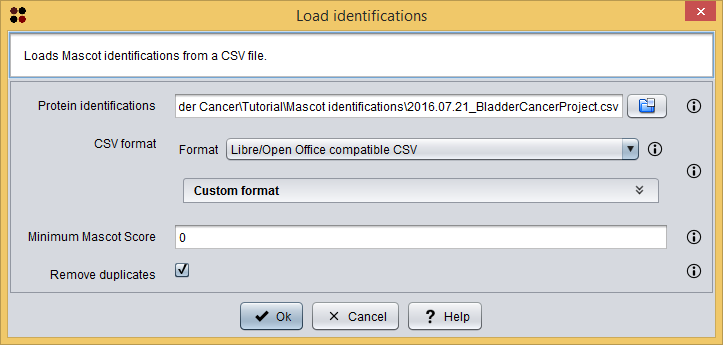

Custom CSV panel
This operation allows you to load Mascot identifications from a CSV file.
Mascot identifications CSV file
This option allows you to load Mascot identifications from a CSV file. This CSV file must have the same format that the one used by the Mascot identifications table to store the data.
Usage
You can execute this operation by clicking the menu option Load/Load Mascot identifications or the toolbar button.
A dialog will appear allowing you to choose the CSV file containing the Mascot identifications and other parameters to filter the identifications to be loaded. As you can see in the following image, this dialog requires you to provide the following information:

Load Mascot identifications dialog
As commented above, you can customize the CSV format by selecting the Custom format option. When you select this option, the following custom format panel will be shown in the dialog. The options included in this panel will allow you to customize the CSV format:
Custom CSV panel
After clicking the Ok button, the loaded Mascot identifications are added as a Mascot identifications datatype to the clipboard and automatically opened in the Mascot identifications table.